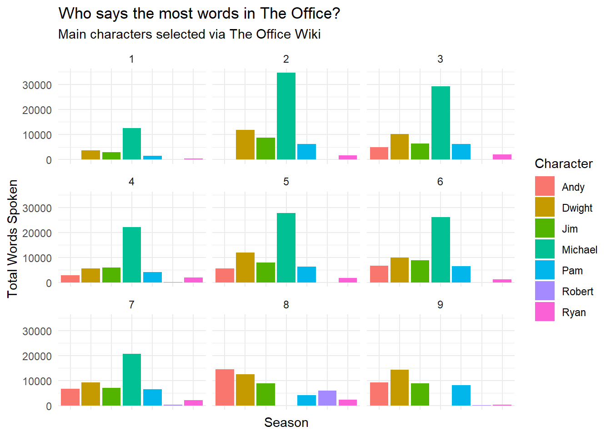
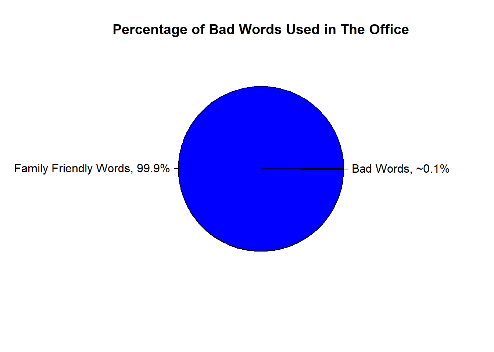

# Data
library(tidyverse)
officelines <- read_csv("the-office_lines.csv")
# Cleaning Data
officelines <- officelines |>
mutate(Line = str_to_lower(Line))
lines <- officelines$Line
lines <- str_remove_all(lines, "[[:punct:]]")
officelines <- officelines |>
select(Character, Line, Season, Episode_Number) |>
mutate(Line = lines) Mini Project 2
Analyzing Lines from The Office
Data was sourced from The Office Lines on Kaggle by Fabriziocominetti
The Office is a comedy show following the lifestyle of seemingly normal office workers. As the show follows multiple characters, there is some debate as to who exactly the main character is. As such, I have decided to count the amount of words spoken by each character per season to better understand who the show writers center most. Additionally, as a young adult show, there is some occasional cussing which occurs throughout. Here, I have quantified the percentage of the show script which involves cussing to see how much of the show involves potty-mouth humor.
Graph 1 (Who says the most words per season?)
Cleaning data:
# Homogenizing the lines
words_per_char <- officelines |>
mutate(word_count = lengths(str_split(Line, "\\s+"))) |>
group_by(Character, Season) |>
summarize(total_words = sum(word_count))
#Keeping only Main Characters & Cleaning Data
main_characters <- c("Michael", "Jim", "Pam", "Dwight", "Andy", "Ryan", "Robert")
words_dont_keep <- c("Voicemail", "Mom", "Dad", "Ad", "Fake", "Except", "Church")
word_pattern_keep <- paste0("\\b(", paste(main_characters, collapse = "|"), ")\\b")
word_pattern_delete <- paste0("\\b(", paste(words_dont_keep, collapse = "|"), ")\\b")
get_rid_ands <- "\\s&\\s|\\sAnd\\s|/|,\\s"
words_per_char <- words_per_char |>
filter(str_detect(Character, word_pattern_keep)) |>
filter(!str_detect(Character, word_pattern_delete)) |>
mutate(Character = str_replace_all(Character, get_rid_ands, ", ")) |>
separate_rows(Character, sep = ", ") |>
filter(str_detect(Character, word_pattern_keep)) |>
mutate(Character = case_when(
str_detect(Character, "\\bJim\\b") ~ "Jim",
str_detect(Character, "\\bPam\\b") ~ "Pam",
str_detect(Character, "\\bDwight\\b") ~ "Dwight",
str_detect(Character, "\\bMichael\\b") ~ "Michael",
str_detect(Character, "\\bAndy\\b") ~ "Andy",
str_detect(Character, "\\bRobert\\b") ~ "Robert", str_detect(Character, "\\bRyan\\b") ~ "Ryan")) |>
group_by(Character, Season) |>
summarise(total_words = sum(total_words), .groups = 'drop') Finally! Graphing!!!
ggplot(words_per_char, aes(x = Character, y = total_words, fill = Character)) +
geom_bar(stat = "identity") +
facet_wrap(~Season) +
theme_minimal() +
labs(
title = "Who says the most words in The Office?",
subtitle = "Main characters selected via The Office Wiki",
x = "Season",
y = "Total Words Spoken") +
theme(axis.text.x = element_blank())
The figure shows the total number of words spoken by each of the main characters (Andy, Dwight, Jim, Michael, Pam, Robert, and Ryan) over the course of a season. Though this data visualization, you can see that Michael is the character who speaks the most (word-wise) throughout seasons 1-7. He was not present in season 8 & 9 (denoted by a lack of words). The character with the second most words throughout seasons 1-8 (except for season 4) is Dwight, who ends up having the most words in season 9. In season 8, Andy has the most words. On average Robert has no words per season, except for a slight amount of words in season 7 and more words in season 8. Ryan also has very few words throughout the show but is consistently present unlike Robert. The legend shows a color-coded labeling system for each of the main character. The x-axis denotes the Season (with number labeling shown above the graphs) and the y-axis shows the total words spoken.
Graph 2 (What percentage of the show involves cussing?)
# Working on the data
total_words <- officelines |>
mutate(word_count = lengths(str_split(Line, "\\s+"))) |>
summarize(total_words = sum(word_count))
bad_words <- c("fuck", "bitch", "shit", "mother-fucker", "mother fucker", "dumb-ass", "dumb ass", "dumbass", "god damn", "goddamn", "god dammit", "goddammit", "dick-head", "dickhead", "goddamned", "whore", "slut", "ass", "bastard", "bullshit", "damned", "damn", "dick", "hell", "prick", "piss", "wanker", "retard", "crap", "douche")
bad_words_pattern <- paste0("\\b(", paste(bad_words, collapse = "|"), ")\\b")
officelines <- officelines |>
filter(!is.na(Line)) |>
rowwise() |>
mutate(bad_word_count = sum(str_count(Line, bad_words_pattern))) |>
ungroup()
lst_of_bw_count <- officelines$bad_word_count
total_bad_words <- sum(lst_of_bw_count)
lst_total_words <- total_words$total_words
wordsdf <- data.frame(
totalwords = lst_total_words,
unfriendly_words = total_bad_words
)
wordsdf <- wordsdf |>
mutate(bad_words_perc = unfriendly_words/totalwords * 100) |>
mutate(good_words_perc = (100 - bad_words_perc))
# Graphing
slices <- c(wordsdf$good_words_perc, wordsdf$bad_words_perc)
labels <- c("Family Friendly Words, 99.9%", "Bad Words, ~0.1%")
pie(slices, labels = labels, main = "Percentage of Bad Words Used in The Office", col = c("blue", "red"))
This graph clearly shows the lack of swear words in proportion to the rest of the show dialogue throughout the 9 seasons, with swear words only making up about 1% of the show’s total words. This show is rated PG-13, which may explain the lack of cussing and an under-reliance of potty-mouth humor. Blue denotes the family-friendly words, and red (although not very visible) displays the swear words. Percentage labeling is included next to the slice tick-marks to aid with quantifying percentages.